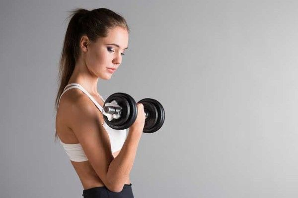
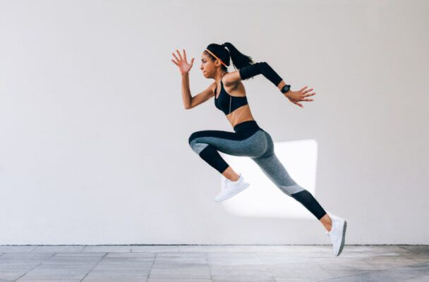

Párate con los pies al ancho de los hombros y sujeta la barra con un agarre supino. Con los codos cerca del cuerpo, flexiona los brazos levantando la barra hacia los hombros. Baja controladamente la barra a la posición inicial y repite.

3 series de 12 repeticiones
Curl con mancuernas
De pie, sujeta una mancuerna en cada mano con las palmas hacia adelante. Flexiona los codos y eleva las mancuernas hacia los hombros sin mover los brazos. Baja lentamente las mancuernas a la posición inicial y repite.
4 series de 10 repeticiones
Press francés para tríceps
Acuéstate en un banco y sujeta una barra con las manos separadas al ancho de los hombros. Con los brazos extendidos sobre el pecho, flexiona los codos para bajar la barra hacia la frente. Extiende los brazos nuevamente para regresar a la posición inicial y repite.
3 series de 12 repeticiones
Extensiones de tríceps en polea
De pie frente a la polea, sujeta la barra con las palmas hacia abajo y los codos pegados al cuerpo. Empuja la barra hacia abajo hasta extender completamente los brazos sin bloquear los codos. Regresa lentamente a la posición inicial y repite.

15-20 minutos con 20 segundos de sprint y 40 segundos de descanso
HIIT corto
Empieza en posición de salida, con el cuerpo inclinado hacia adelante. Corre a máxima velocidad, impulsándote con fuerza desde los pies y moviendo los brazos en sincronía. Mantén el torso firme y la zancada controlada hasta terminar el sprint.
Recuerda realizar descansos de 30 a 60 segundos entre cada serie